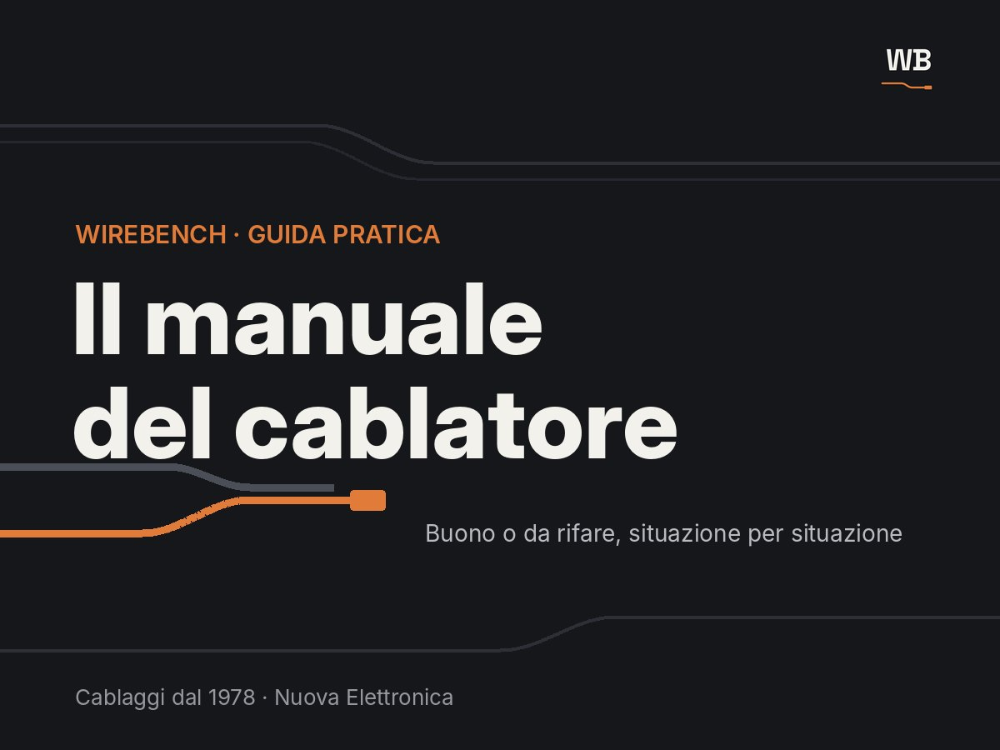
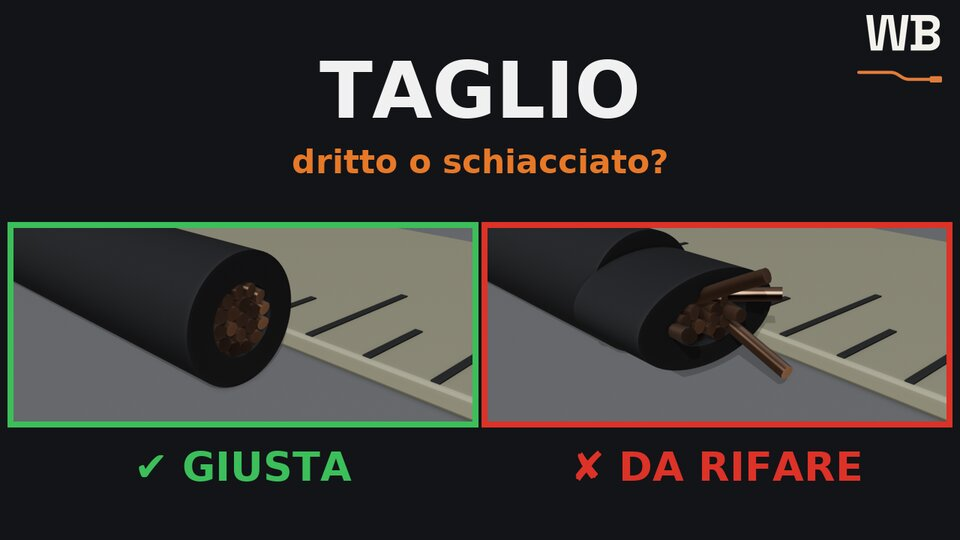
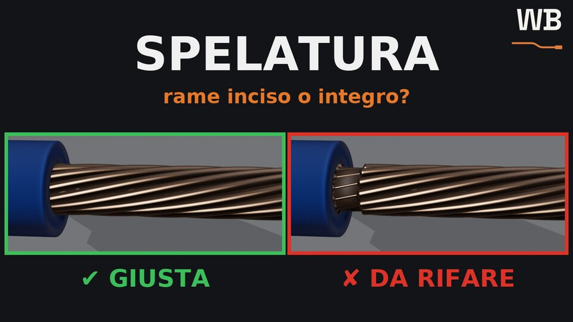
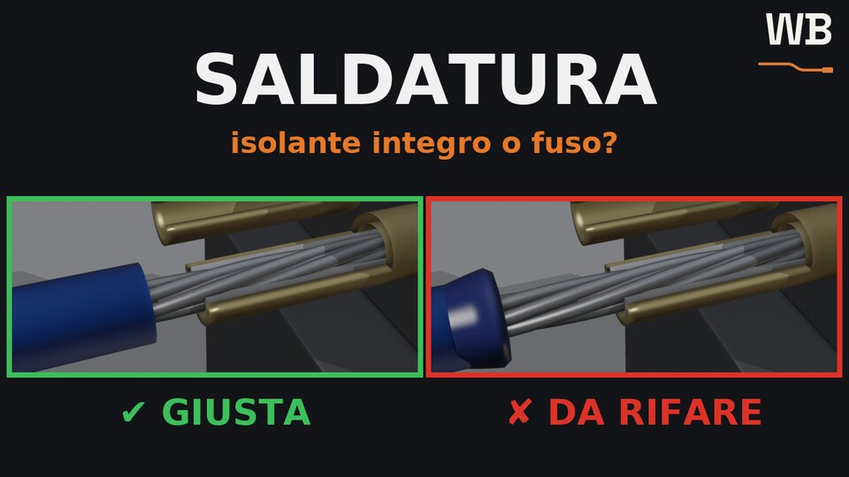
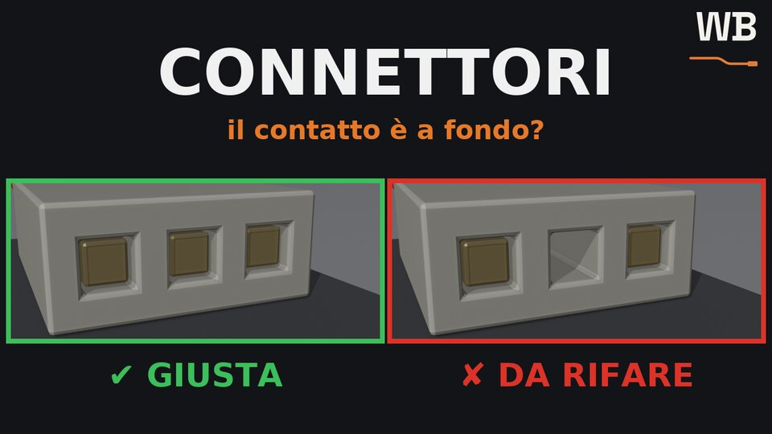
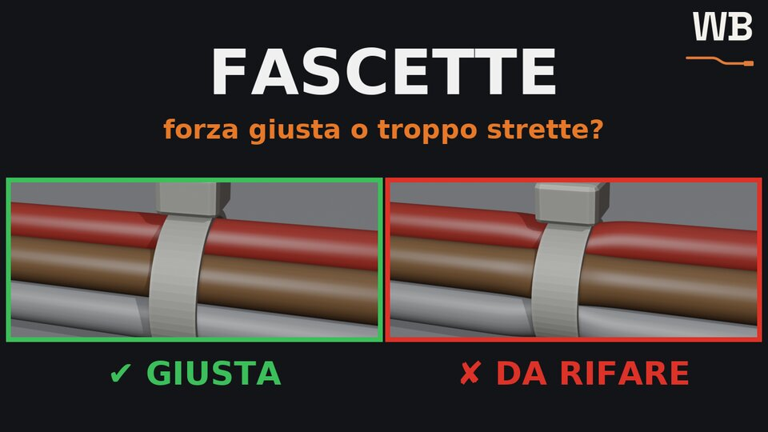
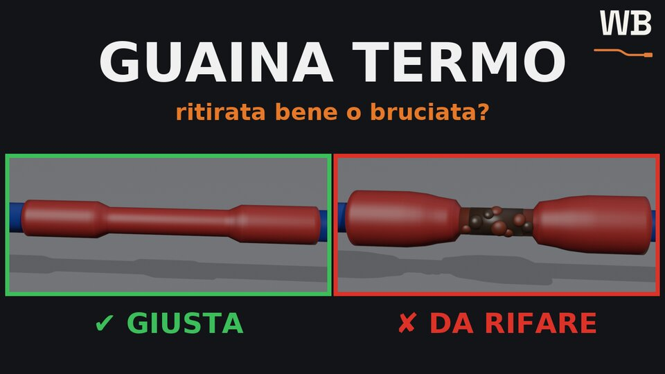

La guida
WireBench — Il manuale del cablatore
Buono o da rifare: come lavorare e controllare i cablaggi elettrici, situazione per situazione.
Un manuale per chi lavora al banco. Non spiega la teoria: spiega cosa fare davanti a un cavo da tagliare, un contatto da crimpare, un connettore da riempire, un cablaggio da collaudare. E come capire, guardandolo, se il lavoro è buono o va rifatto.
Lo abbiamo scritto in Nuova Elettronica, dove facciamo cablaggi dal 1978. Le foto sono scattate sui nostri banchi.

Prezzo e data di uscita li comunichiamo a chi lascia i suoi dati nel modulo qui sotto.
In preparazione. La guida uscirà quando sarà completa, con tutte le foto. Segui il canale YouTube @wirebenchlab per sapere quando esce.
▶ Guarda i video dei capitoli: cap. 7 · cap. 11 · cap. 12 · cap. 8 · cap. 14 · cap. 16 · cap. 19 · cap. 21 · cap. 6 · cap. 17 · cap. 20 · cap. 18 · cap. 28
Per chi è
- Chi comincia a lavorare in un reparto cablaggi e vuole imparare il mestiere nel modo giusto.
- Chi fa già cablaggi e vuole un riferimento per controllare il proprio lavoro.
- Chi forma o segue gli operatori e cerca un testo semplice da dare in mano.
Indice dei capitoli
La guida è divisa in sei parti e 30 capitoli, organizzati per le situazioni che si incontrano in lavorazione. Per ogni situazione: cosa fare, come controllarlo, le foto del lavoro buono e di quello da rifare. Accanto ai capitoli trovi i video: la stessa lavorazione fatta bene e da rifare.
Parte 1 — Prima di cominciare
- Cap. 0 Come usare questa guida
- Cap. 1 Il cablaggio e il suo utilizzo
- Cap. 2 Leggere i documenti di lavoro
- Cap. 3 Posto di lavoro, attrezzi e sicurezza
- Cap. 4 Conoscere e conservare i materiali
- Cap. 5 Riconoscere la sezione e controllare che sia quella giusta
Parte 2 — Preparare i conduttori
- Cap. 6 Taglio a misura

Tagliare i cavi a misura: taglio dritto con il tronchese (cap. 6)
Taglio dritto con un colpo solo, conduttore tondo e trefoli insieme, conforme; tronchese con la lama rovinata che schiaccia il conduttore e strappa i trefoli, da rifare. Apri su YouTube Il video si carica da YouTube solo quando premi il pulsante. - Cap. 7 Spelatura

Spelatura dei cavi: giusta o da rifare? Come riconoscere i trefoli tranciati (cap. 7)
La stessa spelatura fatta due volte: parziale con il testimone, conforme; con la lama troppo chiusa che trancia i trefoli, da rifare. Apri su YouTube Il video si carica da YouTube solo quando premi il pulsante.
Spelatura cavi: conduttore inciso dalla lama? Giusta o da rifare (cap. 7)
La stessa spelatura completa a mano fatta due volte: lama regolata per la sezione che taglia solo l'isolante, conforme; lama troppo profonda che incide il rame con segni ad anello, da rifare. Apri su YouTube Il video si carica da YouTube solo quando premi il pulsante. - Cap. 8 Stagnatura dei conduttori

Stagnatura dei cavi: stagno sotto l'isolante? La prova della piegatura (cap. 8)
Stagnatura breve che si ferma prima dell'isolante, conforme; stagno risalito sotto l'isolante che irrigidisce il filo, riconosciuto con la prova di piegatura, da rifare. Apri su YouTube Il video si carica da YouTube solo quando premi il pulsante. - Cap. 9 Marcatura e identificazione
Parte 3 — Fare i collegamenti
- Cap. 10 Crimpatura: scegliere contatto e attrezzo
- Cap. 11 Crimpatura: eseguire e controllare

Crimpatura dei contatti: isolante sotto le alette? Giusta o da rifare (cap. 11)
Conduttore e isolante nelle zone giuste del contatto, conforme; isolante finito sotto le alette del conduttore per una spelatura troppo corta, da rifare. Apri su YouTube Il video si carica da YouTube solo quando premi il pulsante. - Cap. 12 Crimpatura: difetti tipici

Crimpatura: il rame non arriva in fondo? Come riconoscerlo a vista (cap. 12)
Punta dei trefoli visibile oltre le alette, conforme; conduttore che non arriva in fondo al contatto per una spelatura troppo corta, da rifare. Apri su YouTube Il video si carica da YouTube solo quando premi il pulsante.
Crimpatura: trefoli fuori dal contatto? Perché è da rifare (cap. 12)
Trefoli compatti tutti dentro le alette, conforme; due trefoli aperti in spelatura rimasti fuori dalle alette, da rifare. Apri su YouTube Il video si carica da YouTube solo quando premi il pulsante.
Crimpatura lenta: perché il cavo si sfila dal contatto (cap. 12)
Pinza chiusa fino al cricchetto, alette strette sul rame, conforme; pinza aperta prima del cricchetto, alette socchiuse e cavo che si sfila alla trazione, da rifare. Apri su YouTube Il video si carica da YouTube solo quando premi il pulsante. - Cap. 13 Prove meccaniche e microsezioni
- Cap. 14 Morsetti a vite e a molla, puntali

Puntali per cavi flessibili: trefoli fuori dal collarino? Giusto o da rifare (cap. 14)
Trefoli raccolti tutti dentro il puntale e isolante in fondo al collarino, conforme; due trefoli rimasti fuori dal collarino e piegati all'indietro, da rifare. Apri su YouTube Il video si carica da YouTube solo quando premi il pulsante.
Morsetto a vite: isolante sotto la vite? Perché il cavo si muove (cap. 14)
Conduttore tutto sotto la piastrina e isolante vicino al morsetto senza entrarci, conforme; spelatura troppo corta con l'isolante schiacciato sotto la piastrina e il cavo che si muove alla prova di tenuta, da rifare. Apri su YouTube Il video si carica da YouTube solo quando premi il pulsante.
Capocorda a occhiello: la rondella non va sotto il capocorda (cap. 14)
Capocorda appoggiato direttamente sulla superficie con rondella e dado sopra, conforme; rondella messa sotto il capocorda, la corrente passa dalla rondella e il collegamento scalda, da rifare. Apri su YouTube Il video si carica da YouTube solo quando premi il pulsante. - Cap. 15 Collegamenti a perforazione dell'isolante
- Cap. 16 Saldatura dei cavi

Saldatura su terminale a coppa: troppo stagno? I cinque sguardi (cap. 16)
Stagno fino al bordo della coppa con il filo visibile, conforme; stagno che trabocca a palla e nasconde il conduttore, da rifare. Apri su YouTube Il video si carica da YouTube solo quando premi il pulsante.
Saldatura dei cavi: isolante fuso o ritirato? Come evitarlo (cap. 16)
Calore e tempo giusti, isolante integro con un tratto corto di rame scoperto, conforme; punta tenuta troppo a lungo vicino all'isolante, che si fonde e si ritira lasciando troppo rame scoperto, da rifare. Apri su YouTube Il video si carica da YouTube solo quando premi il pulsante. - Cap. 17 Giunzioni tra cavi

Giunta crimpata e termorestringente: come isolare una giunta (cap. 17)
Termorestringente centrato che copre tutto il metallo e si sovrappone all'isolante dei cavi, conforme; tubetto spostato da un lato che lascia scoperto il metallo del giunto, da rifare. Apri su YouTube Il video si carica da YouTube solo quando premi il pulsante. - Cap. 18 Cavi schermati, coassiali e coppie intrecciate

Cavo schermato: togliere la guaina senza incidere la calza (cap. 18)
Lama regolata che taglia solo la guaina e lascia la calza intera, conforme; lama troppo profonda che incide la calza ad anello, con fili tagliati che sporgono, da rifare. Apri su YouTube Il video si carica da YouTube solo quando premi il pulsante.
Parte 4 — Assemblare il cablaggio
- Cap. 19 Connettori: inserimento e montaggio

Inserire i contatti nel connettore: fino allo scatto e prova di tenuta (cap. 19)
Contatto spinto dritto fino allo scatto che non si muove alla prova di tenuta, conforme; contatto non bloccato che arretra nella via, da rifare. Apri su YouTube Il video si carica da YouTube solo quando premi il pulsante. - Cap. 20 Costruire il fascio

Fascette sul fascio di cavi: la forza giusta senza schiacciare (cap. 20)
Fascetta stretta con la tensione regolata, fascio fermo e cavi tondi, conforme; tensione troppo alta che schiaccia i cavi esterni e segna l'isolante, da rifare. Apri su YouTube Il video si carica da YouTube solo quando premi il pulsante. - Cap. 21 Protezioni: guaine, nastri, termorestringenti, passacavi

Guaina termorestringente: come si ritira senza bruciarla (cap. 21)
Tubetto scaldato dal centro verso le estremità girando intorno al pezzo, aderente e liscio, conforme; aria calda ferma in un punto che brucia il tubetto e fa le bolle, da rifare. Apri su YouTube Il video si carica da YouTube solo quando premi il pulsante.
Parte 5 — Controllare e consegnare
- Cap. 22 Ispezione visiva
- Cap. 23 Collaudo elettrico
- Cap. 24 Pezzi non conformi
- Cap. 25 Imballo, movimentazione e spedizione
Parte 6 — Situazioni particolari
- Cap. 26 Cablaggi secondo l'utilizzo
- Cap. 27 Posa del cablaggio nell'apparecchio o nel quadro
- Cap. 28 Rilavorazione e riparazione

Riparare cavi nel fascio: giunte sfalsate, non tutte nello stesso punto (cap. 28)
Tre cavi riparati con le giunte sfalsate lungo il fascio, almeno una giunta di distanza tra l'una e l'altra, conforme; giunte tutte nello stesso punto che si toccano e fanno un nodo rigido nel fascio, da rifare. Apri su YouTube Il video si carica da YouTube solo quando premi il pulsante. - Cap. 29 Gli errori più frequenti
Appendici: A1 Glossario · A2 Tabelle pratiche · A3 Liste di controllo stampabili · A4 Modelli di schede · A5 Attrezzatura consigliata.
L'indice è quello della bozza attuale della guida: può ancora cambiare prima dell'uscita.
Formato
- PDF da scaricare, impaginato in verticale, da leggere a schermo o stampare.
- Lingua: italiano. Versione inglese in preparazione.
- Ogni copia porta l'email dell'acquirente e la data di acquisto. La guida è per uso personale: copiarla o diffonderla è vietato.
Domande sulla guida
Serve esperienza per leggerla?
No. Parte dalle basi: è scritta in italiano semplice, con un glossario dei termini del mestiere.
Parla di auto d'epoca?
No. È una guida generale sulla lavorazione dei cablaggi, valida in ogni settore. Il restauro dei cablaggi d'epoca è il lavoro di WireBench Lab.
Vuoi saperne di più?
Lasciaci i tuoi dati: ti rispondiamo noi e, se vuoi, ti avvisiamo quando la guida è disponibile. Nessun impegno d'acquisto.
Guarda come lavoriamo
Sul canale YouTube WireBench Lab (@wirebenchlab) filmiamo i lavori al banco: solo mani, attrezzi e cablaggio. Ogni video della guida mostra la stessa lavorazione fatta bene e da rifare.